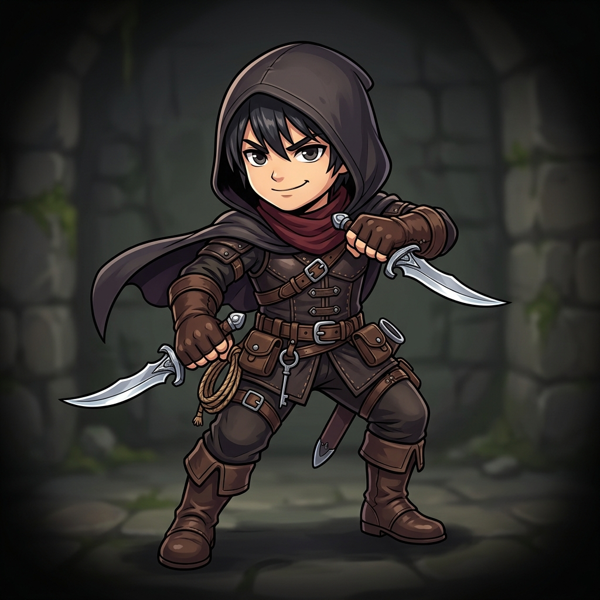

Pick up the quest
NPCs with a yellow "!" above their head have a quest. Talk to them to accept. A "?" means you have a quest to turn in there.
Follow the arrow and minimap
The quest window (the Quest button below) shows the objective. The "Go" and the minimap (top-right corner) point where to go.
Hunt or collect
Most ask you to defeat X monsters or collect Y items they drop. Stay on the indicated map hitting the right monsters.
Turn in and level up
Go back to the marked NPC to get EXP and rewards. Do quests in sequence — they pull you from region to region as you level up.
Quick tips
Elgaill Town
Main NPC: Wallace + tutorial
Learn the basics and do the town's first quests. Highlight: Ominous Accords.
Around Elgaill
NPCs: Crusty, Sylphia, Bibi
Dioraf Bridge, Paviola Circus, Contaminated Forest, Beehive. Highlight: Draff's S.O.S.
Wind Altar / Francis
NPCs: Grace, Talon, Elia, Bruncher, Cassy
Francis Town/Docks, Palm Beach. Highlight: Elf King's Seal.
Francis / WonderPlus
NPCs: Automan, Cop Chups, T.R.Z.
1st Class Change! Do the 1st Advancement quest for your class.
Francis / Mushroom Hill
NPCs: Automan, Jodi, Merion, Bellito
South Hellen Forest. Highlight: Find the Dragon Eggs! (30k EXP).
North Lab
NPCs: Dr. Kim, Automan, Cody, Chef Jack
Lab quests. Good EXP per turn-in.
Abeldras Temple
NPCs: Lara, Brad, T.R.Z.
Climb the temple floors. Highlight: Radio Frequency Snapped II (60k).
Hellen Forest
NPCs: Chris, Annis, Blade, Dirk, Big Mama
Region with MANY quests. Highlight: Dawn of Another Legend (92k!).
Nagpha Swamp / Bermos
NPCs: Falsetto, Kashia, Lauren, Zerald, Luke
Swamp and the Bermos aircraft.
Highland / Bermos
NPCs: Yaf, Neil, Lauren, Katy Kat
Highlight: Evidence of the Conspiracy.
Silent Forest
NPCs: Neil, Yaf, Lauren, Kadopan
Highlight: Evil Leader of the Highlands (45k).
Havoc / Hidden Tribe
NPCs: Rocky, Havoc, Pivrott, Lauren, Blade
Endgame content. Highlight: Defeat the Foreman (300k EXP!).
Class change quests are the most important (and the hardest to find). When you reach level 30, talk first to Automan (in Francis / WonderPlus) — he points you to your class trainer. Do the "1st Advancement" quest and, at the end, choose one of the two specializations. Follow the steps for your class:
instance/portal = the spot is inside a map (enter through the portal). All other places listed are normal hunting maps.

Swordsman
becomes Warrior or Knight
Quest in your log: "1st Adv. I: Swordsman" → "1st Adv. II: Swordsman"
Starting NPC: Automan — Francis Town

Mage
becomes Priest or Wizard
Quest in your log: "1st Adv. I: Mage" → "1st Adv. II: Mage"
Starting NPC: Automan — Francis Town

Thief
becomes Rogue or Ninja
Quest in your log: "1st Adv. I: Thief" → "1st Adv. II: Thief"
Starting NPC: Automan — Francis Town

Scout
becomes Archer or Gunner
Quest in your log: "1st Adv. I: Scout" → "1st Adv. II: Scout"
Starting NPC: Automan — Francis Town
At level 80 comes the 2nd advancement (the quest series "Faithful Road"). Here there is no choice: each class evolves into a single one. The path is always the same:
Warrior Berserker
Trainer: Zerald (WonderPlus Gas Station)
Quest in your log: "Faithful Road: Warrior"
Starting NPC: Lauren — Hellen Office
Hunt: 250 Workvisor (Everwood Lumberyard) · 150 Impact Incubus (Pruneus Powerhouse)
Materials: 200 Gold Ingot, 100 Mithril, 50 Shining Stone, 200 Respirator, 200 Mega MP Pot
Knight Paladin
Trainer: Zerald (WonderPlus Gas Station)
Quest in your log: "Faithful Road: Knight"
Starting NPC: Lauren — Hellen Office
Hunt: 60 Woodworker's Hammer from Woodworkers (Everwood Lumberyard) · Cannon Turtle's horn (Pruneus Powerhouse)
Materials: 200 Silver Ingot, 100 Diamond, 50 Moon Stone, 200 Respirator, 200 Mega HP Pot
Priest Saint
Trainer: Kashia (Coral Beach III)
Quest in your log: "Faithful Road: Priest"
Starting NPC: Lauren — Hellen Office
Hunt: 100 Woodworker (Everwood Lumberyard) · 20 Cannon Turtle (Pruneus Powerhouse)
Materials: 200 Silver Ingot, 100 Diamond, 50 Moon Stone, 200 Respirator, 200 Mega HP Pot
Wizard Warlock
Trainer: Kashia (Coral Beach III)
Quest in your log: "Faithful Road: Wizard"
Starting NPC: Lauren — Hellen Office
Hunt: 120 Impact Incubus (Pruneus Powerhouse) · 250 Accubus (Nagpha Swamp IV–VI)
Materials: 200 Gold Ingot, 100 Ruby, 50 Sun Stone, 200 Respirator, 200 Mega MP Pot
Rogue Knave
Trainer: Luke (WonderPlus roof)
Quest in your log: "Faithful Road: Rogue"
Starting NPC: Lauren — Hellen Office
Tasks: 50 Impact Incubus Horn (Pruneus Powerhouse) · talk to Yaf (Yafkun Campsite, Lamupel Highlands)
Materials: 200 Gold Ingot, 100 Iron Ingot, 50 Sun Stone, 200 Respirator, 200 Mega MP Pot
Ninja Assassin
Trainer: Luke (WonderPlus roof)
Quest in your log: "Faithful Road: Ninja"
Starting NPC: Lauren — Hellen Office
Tasks: 30 Hammerman (Bermos Aircraft III) · talk to Yaf (Yafkun Campsite, Lamupel Highlands)
Materials: 200 Silver Ingot, 100 Emerald, 50 Dark Stone, 200 Respirator, 200 Mega HP Pot
Archer Ranger
Trainer: Wolf (Palm Tree Park I)
Quest in your log: "Faithful Road: Archer"
Starting NPC: Lauren — Hellen Office
Hunt: 200 Cutting Machine (Everwood Lumberyard) · 100 Iron Gunner (Nagpha Swamp Wasteyard II–III)
Materials: 200 Silver Ingot, 100 Emerald, 50 Shining Stone, 200 Respirator, 200 Mega HP Pot
Gunner Gunslinger
Trainer: Wolf (Palm Tree Park I)
Quest in your log: "Faithful Road: Gunner"
Starting NPC: Lauren — Hellen Office
Hunt: 60 Deviltron (Nagpha Swamp) · Cannon Turtle's horn (Pruneus Powerhouse)
Materials: 200 Gold Ingot, 100 Mithril, 50 Dark Stone, 200 Respirator, 200 Mega MP Pot